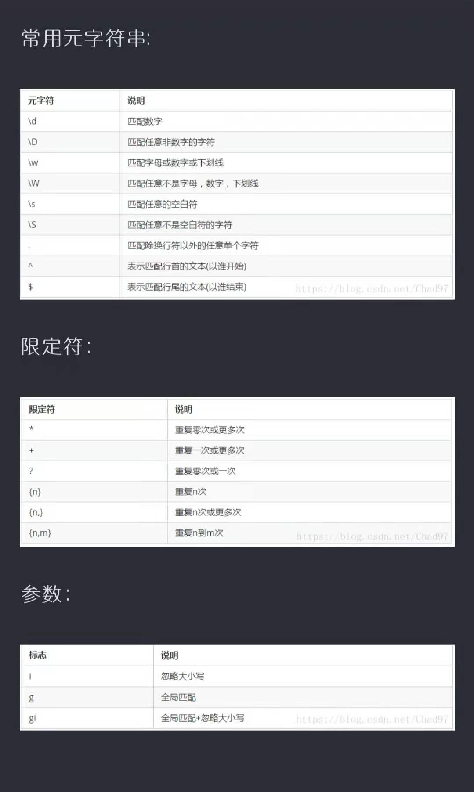
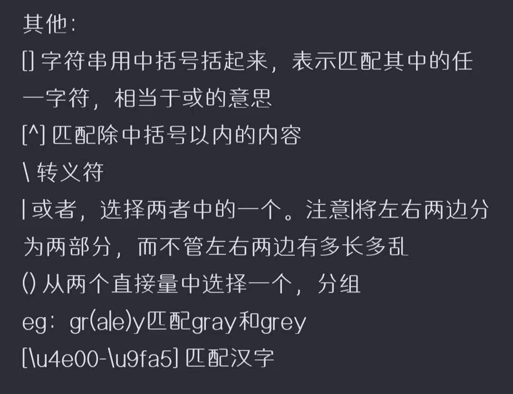

js有三种引入方法，外部js，内部js，元素js。与css类似。
外部js和内部js都由script标签引入，但外部js只能写在头部，且外部js的script标签应这么写：“script src="..."”。元素 js指在元素写js语句或调用函数
变量的命名变量由字母，数字，$，下划线组成，开头不能是数字，变量不能是系统关键字（系统已经使用）和保留字（系统将来可能使用）。
声明javascript中所有变量的声明都用var(如果声明时不对其赋值，则值为“undefined”，如果赋null值则不分配内存空间)
比较运算返回值是true，false
转义字符Number(将由数字组成的字符串转为数字格式),
parseint（从左到右提取数字转为数字格式，注：识别到第一个数字开始提取到第一个非数字终止，数字的正负号也提取）,
parsefloat（从左到右提取数字转为数字格式，注：识别到第一个数字开始提取到第一个非数字和小数点终止，数字的正负号也提取）,
toSring（将数字转为字符串格式，注：还可以通过数字加上一个空字符串来实现）
document.write()中括号内可以包括标签，用"<>"(这时看作字符串)的形式插入标签;以""的形式输出字符串，以变量名输出变量;使用+可以连接各个输出内容
，按字符串+数字=字符串，数字+数字=数字，字符串+字符串=字符串的方法，从左往右进行。
如：
函数
函数用function定义，有直接调用（如直接写f1(......)；），
表达式调用（在加减乘除赋值中调用），
超链接调用（在a标签中用href="javascript:函数名"来调用），
事件调用（通过各种事件来调用函数）四种调用方法。
js中函数可以镶嵌定义，但内部定义的函数只能在内部使用
length属性
调用对象属性时用具体对象名.属性名来调用，返回值是数字格式
对象方法
调用对象方法是用具体对象名.方法名（）来调用,大部分返回值是字符串格式；字符串对象的方法有：
1.toLowerCase(),toUpperCase()将大写字符串转换为小写或将小写字符串转换为大写;
2.chatAt(n)得到第n+1个字符;
3.substring(start,end)截取在[start,end)区间内的字符串；如果不写，end则一直截到字符串结束;
4.replace("","")(原字符串或它的一部分字符串，替换用字符串)可以用replace来替换字符串的一部分，可用正则表达式来写逗号前部分（用字符串形式时
只会替换第一符合条件的部分）;
5.split("作为分割符的字符")，双引号内可以是一个字符或多个字符或一个正则表达式（返回值是数组中），如果用""则分割每一个字符;
6.indexOf("指定字符串")检索指定字符串（首字符）在原字符串中首次出现的位置（数字格式），如果发生错误返回-1，
inlastIndexOf("指定字符串")检索指定字符串（最后一个字符）在原字符串中首次出现的位置
正则表达式
正则表达式以/.../的形式,可以赋值给变量来操作；g表示全局搜索//内的内容为检索的内容（正则默认搜索到一个后停止），+表示内容出现一次或多次如:
var str='abcdaadaefaa'
var newstr=str.match(/a+/g)
这时newstr=a,aa,a,aa.正则表达式是区分大小写的但可以通过//i来关闭这个行为,用（）来进行整体操作否则从左往右
进行,[]表示匹配其中任意一项，{n}表示重复n次，[^...]匹配直到...

数组可以储存同一类别的数据，用var ...=[lll,ababab,lalala,hahaha]（这是简写版，完全版：var ...=new array(lll,lalala,ababab,hahaha)）
的形式来创建一个数组，通过下标来给数组赋值或增加一项：
var a=[a,b,c,d];
a[2]="e";
a[3]="f";
数组具有length属性，数组方法：
1.slice(start,end);截取[start,end）
2.unshift(新元素1，新元素2，新元素3)在数组开头添加元素;
3.push(新元素1，新元素2，新元素3)在数组结尾添加元素;
4.shift()删除开头一个元素;
5.pop()删除结尾一个元素;
6.sort(函数)用函数对数组中元素进行比大小并按排序;(函数要先定义)
7.reverse()使数组中的元素反向排序;
8.join("")定义数组中元素的连接符并将其连接成字符串（默认为，）;
像var a=str.split("").join("#")一样通过方法返回值种类再使用方法可以减短代码长度
使用Date（）来创建一个时间对象，
Date()对象的方法有很多：getFullYear(),getMonth(),getDate(),getHours(),getMinutes(),getSeconds();setFullYear(),setMonth(),setDate()setHours()
,setMinutes(),setSeconds();
setFullYear(year,month,day)/setMonth(month,day)/setDate(day)中第一个元素是必要的。
setHours(hour,min,sec,millisec)/setMinuts(min,sec,millisec)/setSeconds(sec,millisec)中第一个元素也是必要的。
可以用getDay方法来获取星期几，如：